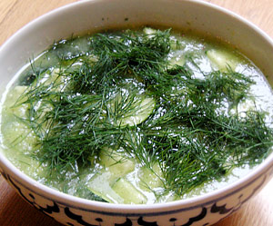

Kalte Gurkensuppe
4,5 von 6eine nostrano gurke schälen und in würfel schneiden. 1 tl senfsamen, eine zwiebel, etwas zitronensaft, 2,5 dl gemüsebouillon und pfeffer dazu und alles mit dem mixer pürieren. eine weiter gurke in würfel schneiden, mit etwas dill in die suppe geben.
1-2 std. kalt stellen.
